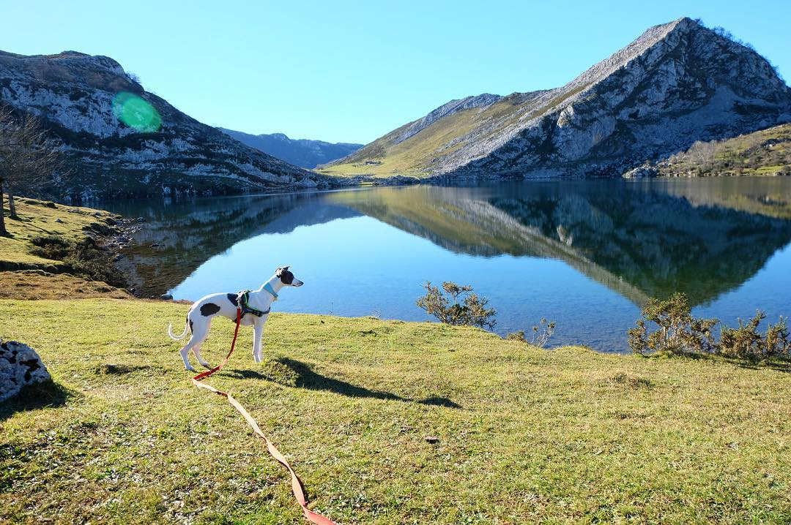

Lago Covadonga
Cantabria
Ruta del Cares
Palacio Real Madrid
Mallorca
Conociendo España
Valencia
Valencia se convirtió en la primera ciudad española en convertirse en destino Pet-friendly en el año 2019.
Madrid
Existen más de 300 hoteles que permiten la entrada de los caninos, incluso pueden entrar al Metro Madrid desde el año 2016.
Es uno de los lugares más permisivos para que los perros puedan entrar en restaurantes, establecimientos, apartamentos y hoteles.
Bilbao
Cada vez son más los bares y restaurantes que permiten la entrada de perros en sus terrazas o incluso en el interior.
Mallorca
Es la ciudad española con más perros por habitante. Hay una gran oferta de ocio perruno y también de destinos en calas
Antequera
Esta preciosa ciudad malagueña lleva desde finales de 2020 trabajando duro para convertirse en un auténtico destino Pet-friendly.
Gijón
Primera población en España en obtener la distinción como Mejor Destino Dog-Friendlyven los Premios TravelGuau 2017
Ponferrada
Fue declarada la ciudad más 'dog-friendly' en el año 2019. Un 35% de los alojamientos turísticos de la ciudad permiten animales
Málaga
En 2017 el Pleno Municipal aprobó la Ordenanza Municipal de Bienestar y Protección Animal.